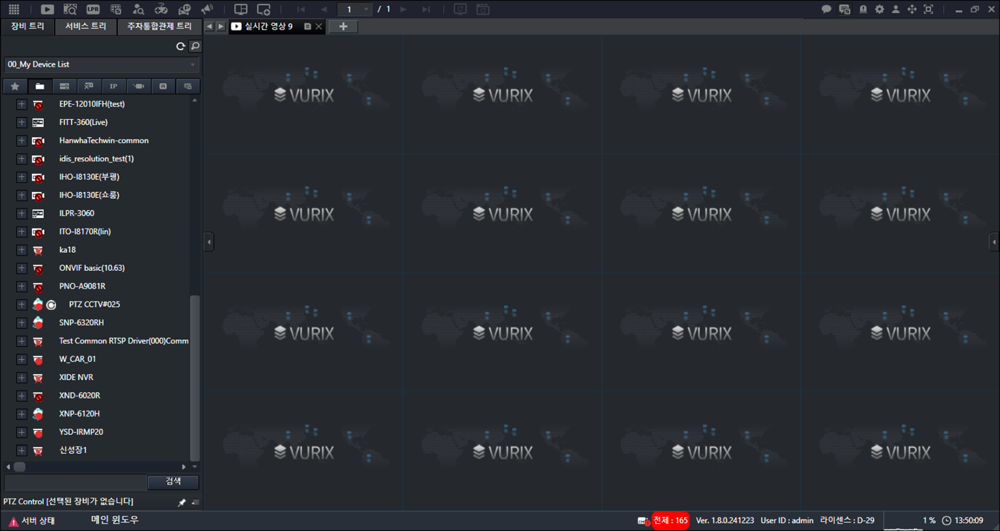
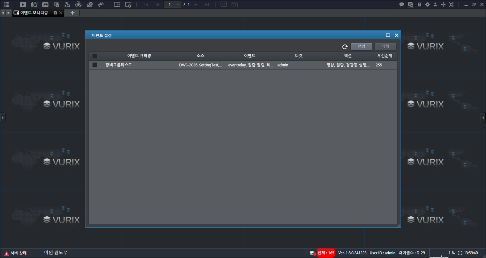
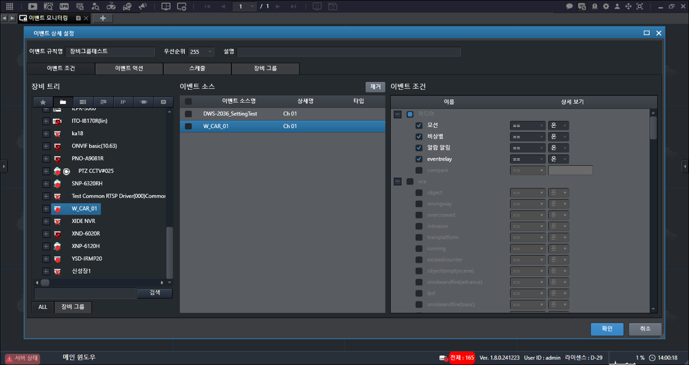
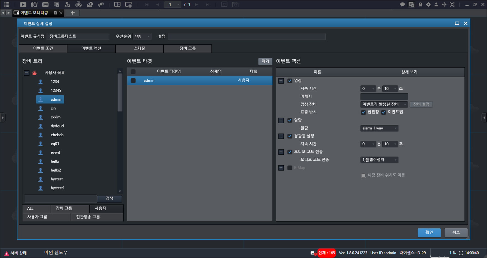
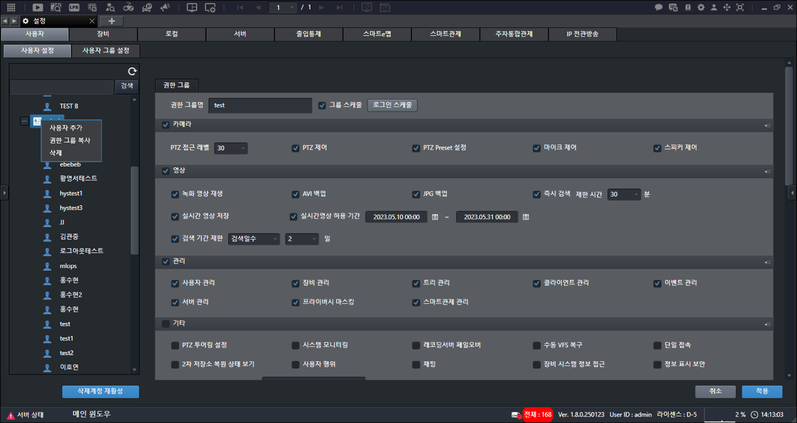
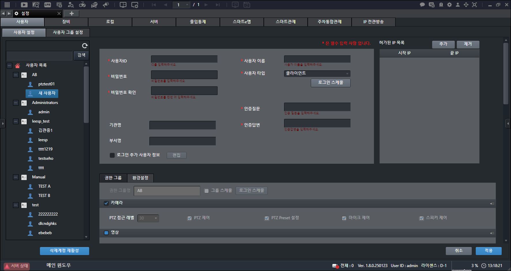
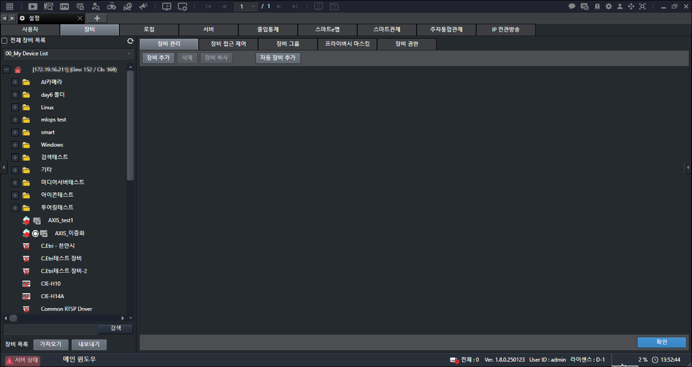
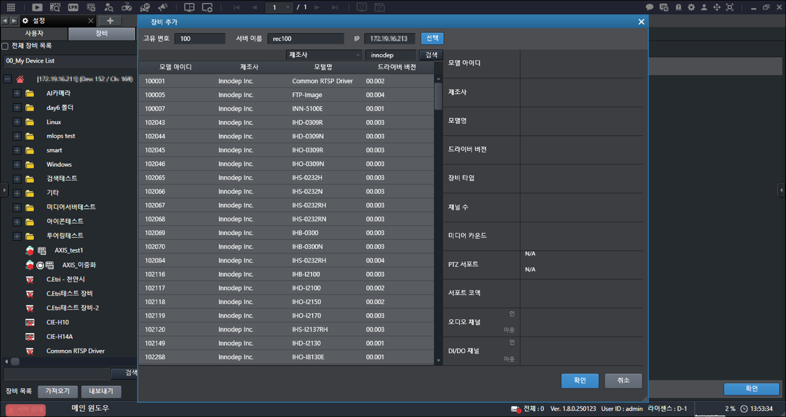
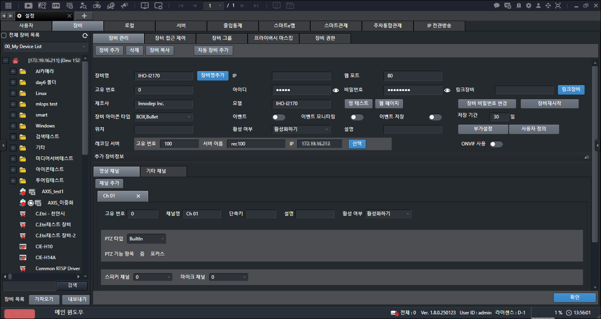

클라이언트 실행하기
실제 화면과 설명서 이미지는 다를 수 있습니다.
1.클라이언트를 실행하세요.
|
 |
2.원하는 항목을 누르세요.
이벤트 관리
이벤트를 관리합니다.
이벤트를 새로 생성합니다.
STEP 1 - 이벤트 조건 설정하기
1.클라이언트 화면에서 [] > []를 누르세요. 이벤트 설정 창을 표시합니다.
|
 |
2.[생성]을 누르세요.
|
 |
3.장비를 마우스 버튼으로 누른 상태에서 [이벤트 소스]로 옮기세요.
STEP 2 - 이벤트 액션 설정하기
1.조건을 설정한 후, [이벤트 액션]을 누르세요.
|
 |
2.원하는 항목을 선택하세요.
•[ALL]: 등록된 장비 목록을 표시합니다.
•[장비 그룹]: 등록된 장비 그룹 목록을 표시합니다.
•[사용자]: 등록된 사용자 목록을 표시합니다.
•[사용자 그룹]: 등록된 사용자 그룹 목록을 표시합니다.
•[전관방송 그룹]: 등록된 전관방송 그룹 목록을 표시합니다.
3.선택한 항목을 마우스 버튼으로 누른 상태에서 [이벤트 타겟]으로 옮기세요.
4.조건을 설정하세요.
5.[확인]을 누르세요.
권한 설정 및 사용자 설정을 합니다.
사용자 계정을 추가합니다.
1.클라이언트 화면에서 [] > [사용자] > [사용자 설정]을 누르세요.
2.[사용자 목록]에서 그룹을 선택한 후, 마우스 오른쪽 버튼을 누르세요.
|
 |
3.[사용자 추가]를 누르세요.
|
 |
4.정보를 입력하세요.
•[사용자ID]: 사용자 계정 아이디를 입력합니다.
•[비밀번호] / [비밀번호 확인]: 사용자 계정 비밀번호를 입력합니다.
•[기관명] / [부서명]: 기관명 및 부서명을 입력합니다.
•[사용자 이름]: 사용자 이름을 입력합니다.
•[사용자 타입]: 사용자 계정 타입을 [클라이언트], [비상벨], [1차 계정], [2차 계정], [종속 계정] 등 설정합니다.
•[로그인 스케줄]: 사용자 계정의 로그인 일정을 설정합니다.
•[인증질문] / [인증답변]: 인증 질문과 답변을 입력합니다.
•[로그인 추가 사용자 정보]: 로그인에 필요한 추가 정보를 설정합니다.
5.[적용]을 누르세요.
6.프로그램을 다시 시작하세요. 설정을 완료합니다.
|
|
|
•[비밀번호]는 영어 대문자 및 소문자, 숫자, 특수문자 모두 포함합니다. (9자리 ~ 16자리) •[허가된 IP 목록]에서 [추가]를 누르세요. 접속 가능한 IP 목록을 추가합니다. •삭제한 사용자 계정 아이디의 재사용은 불가능합니다. |
장비 추가, 삭제, 복사 등 장비를 관리합니다.
장비를 추가합니다.
1.클라이언트 화면에서 [] > [장비] > [장비 관리]를 누르세요.
|
 |
2.[장비 추가]를 누르세요.
3.조건을 설정한 후, [검색]을 누르세요.
|
 |
4.원하는 항목을 선택한 후, [확인]을 누르세요.
|
 |
5.[IP]를 입력하세요.
6.[레코딩 서버]에서 [선택]을 누르세요.
7.서버를 선택한 후, [확인]을 누르세요.
8.원하는 항목을 설정하세요.
•[레코딩 미디어]: 레코딩 미디어를 설정합니다. (듀얼 스트림 사용 경우 레코딩을 사용할 스트림을 선택합니다.)
•[미디어 추가]: 미디어를 추가합니다. (듀얼 스트림은 듀얼 스트림을 지원하는 장비만 가능합니다.)
•[레코딩 스케줄]: 레코딩 스케줄을 설정합니다.
•[PTZ 제어 스케줄]: PTZ 제어 스케줄을 설정합니다.
•[어안 렌즈 설정]: 어안 렌즈를 설정합니다.
•[연동된 장비]: 연동된 장비를 설정합니다.
9.[확인]을 누르세요.
10.프로그램을 다시 시작하세요. 설정을 완료합니다.
|
|
|
•[IP] 입력 후, [아이디]와 [비밀번호] 확인이 필요합니다. •[어안 렌즈 설정]에서 [X축 반지름 변경], [Y축 반지름 변경], [회전 컨트롤 보이기] 등 선택 값은 어안 렌즈 설정 경우에만 적용합니다. 장비 설정 저장 항목이 아닙니다. |